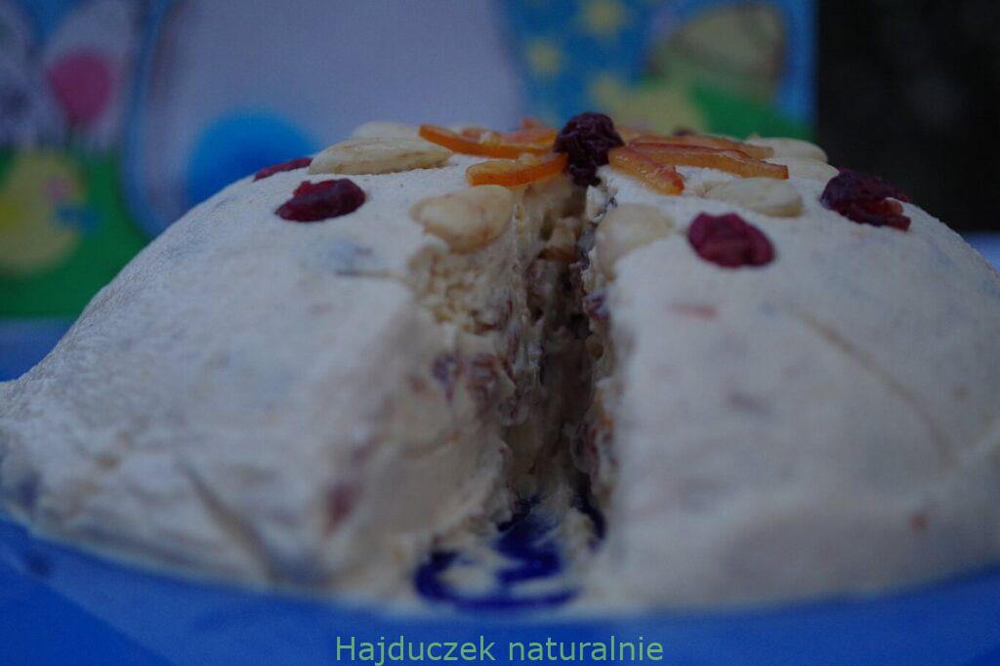
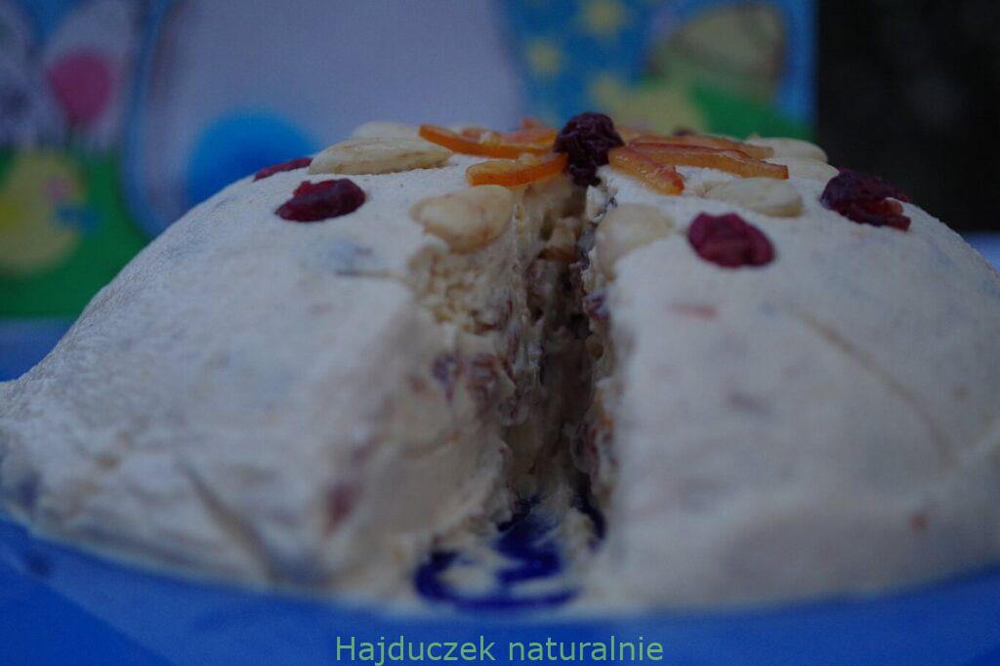

1. PRZEPIS NA NAJLEPSZE PUSZYSTE NALESNIKI

2. ROBERT MAKŁOWICZ - PROSTA PASCHA 
3. CYTATY ROBERTA MAKŁOWICZA
4. KALORYCZNOSC NAJPOPULARNIEJSZYCH WARZYW I OWOCÓW
2. ROBERT MAKŁOWICZ - PROSTA PASCHA 
3. CYTATY ROBERTA MAKŁOWICZA
4. KALORYCZNOSC NAJPOPULARNIEJSZYCH WARZYW I OWOCÓW